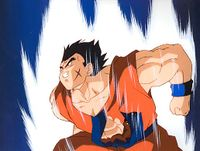
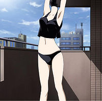
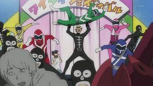

Durarara!!
 De: La Frikipedia, la enciclopedia extremadamente seria.
De: La Frikipedia, la enciclopedia extremadamente seria.
| De la serie anime para todos:
|
| Durarara!!
|

|
| Yamcha, su creador todo poderoso
|
|
| Género:
|
shonen ai
|
| Episodios:
|
24 putos capitulos y un final mas abierto que el culo de el
|
| Autor del manga:
|
que no quedo claro que fue Yamcha?
|
| Publicación:
|
2012, es por eso que no pudieron crear un final mejor, se murieron antes
|
| Publicado en:
|
Ikebukuro
|
| Director del anime:
|
Diox
|
| Transmitido en:
|
Ikebukuro
|
| Ovas:
|
no se
|
| Películas:
|
No
|
| Notas
|
algo extraño cundo miras al gran Yamcha?
|
«Que diablos es esto? NO ENTIENDO nada¡»
~ Un fulano tras ver el primer capitulo de este anime
«Que anime tan genial, lastima que termino»
~ El mismo fulano tras haber terminado/comprendido este anime
«Ah, os aclarare algo, NINGUNO DE USTEDES, son mi tipo!»
~ Shizuo afirmando que es gay y que ninguno de ellos son su tipo
«Amo a los humanos,estoy enamorado de ellos!»
~ Izaya diciendo que le viene bien cualquiera
«Es que estoy tratando de seducirte»
~ Celty haciendo poses sexys para Shinra
Durarara!! es la fusión del gran talento de Yamcha y la increíble y todo poderosa dirección de Diox. Yamcha, luego de terminar sus grabaciones en Dragon Ball quedo completamente destruido y sumido en las drogas tristeza, fue cuando de una nube de pedos apareció Diox, y con toda su tallarinesca maldad le ofreció dominar el mundo, pero Yamcha lo rechazó, pero unos años después, viendo como toda su fortuna se había esfumado en putas(lo tachado es mentira porque Yamcha le tiene miedo a las mujeres)decide aceptar la oferta de Diox, pero este ya no tenia lo necesario para dominar el mundo, por eso tubo que usar un método más accesible al bolsillo (¿diox tiene bolsillos?), lo que los japoneses crearon para el mismo fin, lavar el cerebro con dibujos animados de alta complejidad, y así fue creada esta gran mierda obra maestra, en los primeros días del año 2012, pero como todos sabemos que ese año la tierra hace cabum y a todos nos transformamos en miles de pedacitos, wiii que divertido, bueno, pero eso no viene al punto, sigamos con la historia, Diox decidió mandar con sus increíbles poderes esta magnífica obra de arte para que nosotros pudiéramos disfrutarla, punto final.
SINOPSIS (Sí..sinopsis..)
Dicha obra maestra comienza cuando Mikado Ryugamine decide marcharse de su casa e irse a vivir a una zona de Tokyo,llamado Ikebukuro, ya que estamos en esto, uno de los aspectos mas extravagantes de la serie es que los jovenes aparentemente viven totalmente solos, sin siquiera un puto adulto que los joda, lo que nos hace pensar que tal vez tampoco pagan renta, ni su comida, ni ropa ni nada (que yo sepa) o bien todos son unos mantenidos o bien los perros cagan la plata. En fin, es un mundo donde los padres no existen, o en un caso casi imposiblemente probable, hay un uso excesivo de la Ley de los padres Ingenuos,(vigente aqui ).
En fin, resulta que Ikebukuro comienzan a pasar un montón de "¡cosas locass!", entre las que se destaca una motociclista silenciosa con casco de gato y medias de red, sin patente ni luces, o sea totalmente ilegal, a si, y además no tiene cabeza, pero de eso hablare más adelante.
Como ya mencione antes, los pendejos andan solos por la vida, tirandoce todo lo que ven por delante y fumando porro todo el jodido día, es por eso que se creen cualquier puta leyenda urbana y se inventan historias de asesinos con katanas y todo eso, esto no incluye a la motociclista descabezada, porque eso es totalmente verdad, vamos quien sería tan idiota de no cree en eso, en fin, resulta que el feliz Ikebukuro hay varias bandas que se identifican por el color que tiene la droga que se fuman y o aspiran, están los mariguana amarilla y los del opio azul, estos dos se pelearon (sucedió antes de que comenzara el anime) y terminaron disolviéndose, pero poco después aparecieron los Dollars, que no tenían color, ya que se fumaban lo que les llegaba a las manos (sobre todo si era merca yanki, por eso se llaman dollars) pero resulto que los Mariguana amarilla se pusieron celosos y quisieron formar otra banda que se llamara los Euros, pero como ese nombre ya era marca registrada no pudieron, así fue como comenzó a formarse la previa a una nueva guerra de bandas, en una ciudad donde los pendejos andan sueltos por ahí, donde los camareros te cagan a trompadas y donde los motociclistas no usan ni luces ni patente.
 Yamcha en pleno proceso creativo!!
Mikado y Kida los mejores "amigos"
Personajes
- Mikado Ryuugamine: La historia comienza con él, es el clásico niño bueno que se preocupa por los demás y que no tiene huevos para hacer nada. Además de eso es el creador de los Dollars, ya que como no tenía amigos de verdad prefirió hacerlos por internet, no conforme con eso, se marcho de su casa para irse a vivir a ikebukuro, ya que quería que su vida tuviera más
sexo, drogas y rock and roll emoción, en vez de eso, ni bien llegar se reencontró con su antiguo novio amigo, Masaomi Kida, quien ahora era el papi mafia tenía el pelo teñido de rubio y en secreto mantenía relaciones con Izaya era el antiguo fundador de los marihuana amarilla. Este fue quien le mostro Ikebukuro a Mikado, y le enseñó todas las "¡Cosas locasss!" que sucedían en Ikebukuro, y de quienes debía cuidarse. En el instituto Mikado conoció a Anry Sonohara, prima lejana de La ramera tímida, quien lo puso cachondo el resto de la serie.
- Masaomi Kida: Es el
ex novio mejor amigo de Mikado. Aparentemente, él, al igual que todos los mocosos de esta serie, vive totalmente solo, fue el creador de los mariguana amarilla, asociación que creó para hacerse de una comunidad igual de pirada que el, pero luego de darse cuenta de que la mariguana ya no tenía el mismo efecto se dio cuenta que su proveedor, Izaya le estaba vendiendo droga de mala calidad, por esto en intento desesperado por conseguir mejor pasta acabó por echar todo a la mierda junto con su noviecita, que por culpa de el fue violada casi asesinada por la banda de los del Opio azul, finalmente se dio cuenta de que las drogas eran una mierda y las acabo dejándolas. Respecto a su vid personal, aunque Mikado le corto el rostro, dejándolo por Anry, está enamorado de el, aunque para no demostrar su homosexualidad fingiendo que le gusta Anry, aunque ya quedo plenamente demostrado que las relaciones que pudo haber tenido con Anry o Mikado fueron puro juego para el, ya que tiene novia y dos preciosos niños, esto ocasionó un par de problemas legales en los que no se sabía si el anime iba a seguir emitiendose, pero finalmente Yamcha con su todo poderoso puño puso las cosas en su lugar
- Anry Sonohara: La prostituta oficial de la serie. Sólo por eso consiguió un papel importante en la serie: se tiró al autor (wow, ¿se la imaginan tirándose a Yamcha?). Tiene una delantera tan grande que las matrículas de los coches se sienten intimidadas. Según ella, no puede amar, por eso es que tiene a su katana mágica para que ame a todo el mundo por ella, cuando en realidad la usa para masturbarse, la pobre quedo así de loca luego de ser brutalmente violada por su madre la cual, luego de ello asesino a su padre y como listón del regalo luego se suicido, todo con la misma katana, es por eso que la pobre perdió su personalidad y se deja hacer "lo que sea" por cualquiera, acepto Mikado
porque es patetico. Cuando usa su katana sus ojos se tornan rojos por el nivel de droga y excitación.
asi era como Kida pagaba la mariguana a Izaya.
- Celty Sturluson: Alias Stunky, el Pokémon La cabeza hueca de la serie (y nunca mejor dicho). Se pasa los 24 capítulos buscando su cabeza, aunque en realidad quien se la quitó fue el padre de su novio. De ahí que sea una cabeza hueca. Ella es una
puta irlandesa Dullhan que se dedica a hacer unos trabajitos que su novio le dice, éstos trabajitos se llaman entregas, tiene una moto hibrida que gasta poco combustible, su moto la logro cruzando un caballo con una moto y pues, el amor sucedió, ahora tiene las ventajas de una moto, con las ventajas de un caballo, el único inconveniente es que tiene que limpiar las gracias de lo que come su hibrido, aunque eso no es escusa para ser tan irresponsable de andar sin luces ni patente, es por eso que un policía loco la comenzó a perseguir más o menos desde la mitad del anime.
 Celty insinuándosele a Shinra
- Shinra Kishitani: Es la muestra viviente de que no hace falta que tu chica tenga cabeza para amarla y quererla, además de hacer ciertas cosas, aun asi, algunas fuentes an informado que declaro que es la chica perfecta, por que no habla (esto produjo ciertos problemas entre los integrantes del elenco). Es quien le da los encargos a Celty, además trabaja mutilando y re transformando las personas en un laboratorio secreto, respecto a su pasado, el pobre fue creciendo junto a un padre que le obligaba a abrir cadáveres, en vez de llevarlo al McMierda y dejarlo ver porno, como los niños normales.
- Izaya Orihara: Es el niño malo de la serie, del tipo que roba caramelos, patea perros y pisa celulares, tiene una obsesión por los seres humanos, dice que los ama, por lo tanto los hace sufrir como perros, a pesar de que ama a los humanos, tiene un "complejo"
amoroso hacia Shizuo, por lo que disfruta soplarle e en la oreja y salir corriendo haciéndolo enojar. Fue quien le vendía la droga a Kida a cambio de largas sesiones de sexo que este hiciera todo lo que le decía, a un estilo del juego Simon dice. Tiene la costumbre de jugar con fichas de varios juegos diferentes, lo que nos hace dudar de su salud mental, o su capacidad para comprender para que sirven en si las fichas.
 No, Shizuo, no, chico malo, baja a ese pobre Power Ranger
- Shizuo Heiwajima: Nadie sabe, porque ni como, pero este tipo tiene súper fuerza, y a pesar de no gustarle la violencia, cuando se enfada no puede controlarse y acaba por darle en la mierda a las señales de tránsito, coches, transeúntes y las maquinas expendedoras de bebidas, previo a esta clase de escenas, rompe lo que sea que tenga en la mano y comienza a repetir que está molesto, lo que bien, es una clara muestra de algún retraso mental, o bien, es solo tic nervioso. Por los anteriores motivos mencionados, fue revotando de trabajo en trabajo, hasta que cayó como camarero, pero por culpa de Izaya fue nuevamente despedido y decidió tomar trabajo como gurda espaldas. Tiene el mismo tipo de complejo que Izaya tiene hacia el, es decir, lo ve y tiene la necesidad de
violarlo matarlo. Tiene todo tipo de fans, es venerado por ser el seme perfecto, por ser el tío bueno perfecto, por ser el luchador de Pressing Catch perfecto... vamos, que el tío este es un cabrón (porque nuestras novias piensan en él mientras las ponemos mirando pa Cuenca). Sin embargo, por mucho que pensemos eso, le seguiremos venerando.
- Kasuka Heiwajima: Alias el Brad Pitt de Japón. Supuesto famosillo hermano del camarero incomprendido. Poco se sabe de él, sólo que fue el ganador de Gran Hermano 4 años consecutivos.
- Erika Karisawa: Es una fangirl-otaku empedernida que no sabe distinguir entre la realidad y el mundo
real ficticio de los mangas (como si todos los otakus no fuésemos así). Es considerada la diosa del yaoi por haber predicho una de las parejas más revolucionarias en lo referido al yaoi es decir el Shizaya, y si no sabes lo que es te recomiendo que lo busques en gugle pedazo de ignorante. En el pasado solía pertenecer a los opio azul hasta antes de salvar a la perra novia de kida de der brutalmente violada asesinada, y ahora anda repartiendo pizza con sus pandilla en una furgoneta y resolviendo misterios se mete a ayudar con sus amigos a quienes lo necesiten.
- Walker Yumasaki: Es el mejor amigo de Erika, además de un enfermo amante del anime y manga, dícese otaku, al igual que su folla-amiga, no sabe distinguir entre el mundo real y el ficticio, por lo que el tiempo que no esta leyendo manga, se la pasa
diciendo huevadas hablando de su ya mencionada afición. Él también pertenecía a los del opio azul y fue uno de los salvadores de la novia de Kida (en realidad lo único que hizo fue tirar una bomba dentro de la furgoneta donde la tenian cautiva) ya desde esa época conocía a Erika y a Karotadota.
- Kyohei Kadota: Es uno de los personajes más callados de la serie, ya que lo que más bien hace es pensar (si amigo, pensar, lo que tu no hiciste en toda tu vida), pero como este le es un proceso tan prolongado, para cuando quiere decir lo que opina ya se le paso la conversación. Como ya mencione antes, era amigo de el duo otakufriends, Erika y Walker
y su estupido perro scooby doo. Al final de la serie termina salvando a Kida y compañía de ser mortalmente golpeados con almohadas.
- Saburo Togusa: Es parte de la pandilla de Dakota,es quien maneja la furgoneta en la que
reparten piza se mueven por todo ikebukuro, el pobre tipo es un frustrado (si, como tu) cuya única alegría en la vida es conseguir entradas robadas de manos de un tipo sin el que (segun él) no puede vivir, ya que las entradas son para ir a ver las presentaciones de una idol-cantante-puta con la que esta profundamente cachondo. Tiene una obsesión con su furgoneta, por lo cual hay una serie de reglas, he aquí las principales:
- No se bebe en la furgoneta.
- No se come en la furgoneta.
- No se orina en la furgoneta.
- No se defeca en la furgoneta.
- No se coge en la furgoneta.
- No se baila chachacha en la furgoneta.
- No se toca el tambor el la furgoneta.
- No se fuma en la furgoneta.
- No se juega al guitar hero en la furgoneta.
- No se hace la vertical sobre una sola mano y con la otra tacando la flauta en la furgoneta.
- Seiji Yagiri: Alias Pelo Patrás. Aprendió a hacerse ese peinado gracias a su gran maestro, Aizen Sosuke. Además, es metrosexual.
- Mika Harima: Alias Cabezita. Acosadora en potencia, tanto, que llegó a implantarse una cabeza para gustarle al metrosexual de antes.
- Namie Yagiri: Alias diosa del incesto. Es la diosa del incesto, porque está enamorada de su hermano el metrosexual. Creó parejas incesto como por ejemplo, Hikaru x Kaoru, los zanahorios de Ouran
- Simon Brezhnev: Alias Don Simón. Un ruso con rayos uva en exceso. No se sabe qué pinta él en la serie; no tiene pareja.
- Saki Mikajima : Alias estúpida. Estúpida por dejarse secuestrar y dejar que le rompan las piernas. ¿A quién se le ocurre? A ella. Su novio le puso los cuernos mientras ella estaba en el hospital, pero no se enteró.
¿Sabías que...
- ...Durarara!! tiene un anime primo-hermano llamado Baccano!?
- ...muchos no saben la contraseña de la pagina de los dollars a pesar de que vieron el anime?
- ...Zerochan está invadido por imágenes de Durarara!!?
- ...Luego de Vocaloid y Homestuck?
- ...Izaya esta de verdad enamorado de Shizuo?
- ...Ya que en el ultimo cap dijo que no quería perderlo?
- ...Y que Shizuo también esta enamorado de Izaya?
- ...IzayaXShizuo?
- ...Ahh...I-itai...
Enlaces externos
Autor(es):
- Fordus
- SakuraMiya
- Kevrochi
- Maru 2009
- Harry El del Pote
- Genericool
- Rigter28
- Miyane4
- Tri
- Not so friki
Frikipedia 2005-2016, Licencia
GFDL 1.2 - Extraído por FrikiLeaks